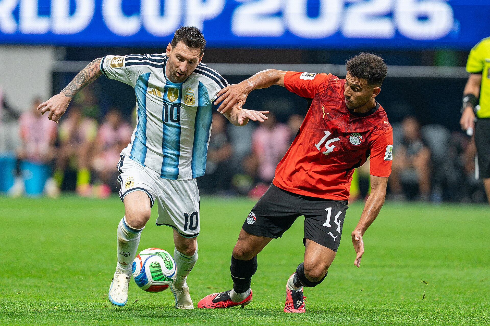

Lionel Messi terminou a Copa do Mundo de 2026 ainda mais distante dos demais jogadores em um dos recordes mais difíceis de alcançar no futebol. Depois de já ter assumido a liderança histórica de partidas disputadas em Mundiais no Catar, em 2022, o argentino participou de todos os jogos da seleção Argentina na edição realizada nos Estados Unidos, México e Canadá e elevou sua marca para 34 aparições.
Aos 39 anos, ele disputou sua sexta e última Copa do Mundo. A trajetória terminou com o vice-campeonato após a derrota por 1 a 0 para a Espanha na prorrogação da final, mas ampliou de forma significativa um recorde que já pertencia ao camisa 10.
O número também mudou a distância para os perseguidores. Depois da Copa de 2026, Cristiano Ronaldo passou a ocupar a segunda colocação histórica, com 27 partidas, enquanto Lothar Matthäus, antigo recordista, aparece com 25. Messi, portanto, terminou o torneio sete jogos à frente do português e nove acima da marca do alemão que durante décadas serviu como referência de longevidade em Copas.
Os jogos por edições
A trajetória de Messi no torneio atravessou seis edições e três clubes diferentes. A distribuição de partidas mostra como o recorde foi construído gradualmente até ganhar uma dimensão muito maior em 2026:
- 2006 — 3 partidas
- 2010 — 5 partidas
- 2014 — 7 partidas
- 2018 — 4 partidas
- 2022 — 7 partidas
- 2026 — 8 partidas
- Total — 34 partidas
A edição de 2026 acrescentou oito jogos ao histórico porque a Argentina avançou novamente até a final e Messi participou de todas as partidas da campanha. O novo formato com 48 seleções também passou a incluir uma fase de 16-avos de final, aumentando o caminho possível até a decisão. No caso argentino, o capitão esteve presente da estreia até o duelo que definiu o campeão.
Messi também se tornou o primeiro jogador a atuar em seis Copas do Mundo ao entrar em campo na estreia argentina de 2026. A marca levou sua presença no torneio a um intervalo de duas décadas, desde a primeira participação na Alemanha, em 2006, até a decisão disputada nos Estados Unidos em 2026.
Os clubes que jogava em cada Copa do Mundo
O recorde também acompanha as diferentes etapas da carreira. Nas quatro primeiras Copas, ele ainda defendia o Barcelona. Em 2022, chegou ao Mundial como jogador do Paris Saint-Germain. Já em 2026, disputou o torneio como capitão do Inter Miami.
- Copa de 2006 — Barcelona
- Copa de 2010 — Barcelona
- Copa de 2014 — Barcelona
- Copa de 2018 — Barcelona
- Copa de 2022 — Paris Saint-Germain
- Copa de 2026 — Inter Miami
De jovem estreiando á recordista absoluto
A primeira Copa de Messi aconteceu em 2006. Ainda muito jovem, aos 18 anos, ele disputou três partidas. Quatro anos depois, na África do Sul, esteve em cinco jogos. Em 2014, no Brasil, chegou pela primeira vez à final, completando sete partidas naquela edição.
A campanha de 2018 foi mais curta, com quatro aparições e eliminação argentina nas oitavas de final. O salto decisivo para o recorde aconteceu no Catar, em 2022. Messi disputou sete partidas e chegou à final contra a França com 25 jogos acumulados, empatado naquele momento com Lothar Matthäus. Ao atuar na decisão, alcançou a 26ª partida e assumiu sozinho o primeiro lugar histórico.
Aquela final ainda carregou um significado maior: além de quebrar o recorde de jogos, Messi conquistou o título que faltava à sua carreira. A Argentina levantou sua terceira Copa do Mundo e colocou o camisa 10 ao lado de outras gerações que marcaram a história da seleção.
A 34ª partida aconteceu justamente no maior palco possível. Messi foi titular contra a Espanha na final disputada no New York New Jersey Stadium. A FIFA registrou ainda que Messi, com 39 anos e 25 dias, tornou-se o jogador de linha mais velho a disputar uma final de Copa do Mundo.
A decisão encerrou a tentativa argentina de conquistar duas Copas consecutivas, mas acrescentou outro capítulo histórico à carreira do camisa 10.
Os jogadores com mais partidas em Mundiais
A Copa de 2026 também reorganizou a parte mais alta do ranking de jogadores com mais partidas no torneio. Messi permaneceu isolado na liderança, enquanto Cristiano Ronaldo ultrapassou Matthäus e assumiu a segunda posição.
- Lionel Messi — 34 jogos
- Cristiano Ronaldo — 27 jogos
- Lothar Matthäus — 25 jogos
- Miroslav Klose — 24 jogos
- Paolo Maldini — 23 jogos
- Luka Modric — 23 jogos
- Manuel Neuer — 23 jogos
A lista oficial da FIFA mostra o tamanho da vantagem construída por Messi. Além de ser o único jogador a atingir 30 partidas, ele terminou o Mundial de 2026 sete jogos acima do segundo colocado.
Chegar a 34 partidas em Copas exige muito mais do que longevidade. Um jogador precisa permanecer durante vários ciclos entre os principais nomes de sua seleção, ser convocado repetidamente, estar disponível fisicamente e, principalmente, participar de equipes capazes de avançar por muitas fases.
Messi reuniu todos esses elementos. Jogou seis edições, esteve em três finais — 2014, 2022 e 2026 — e participou de campanhas longas em diferentes momentos de sua carreira. Em vez de apenas acumular presenças em fases de grupos, construiu boa parte do recorde justamente em partidas eliminatórias.
A comparação com os demais recordistas ajuda a dimensionar a marca. Matthäus, durante muito tempo referência absoluta, disputou 25. Messi colocou nove partidas entre sua marca atual e o antigo recorde que superou apenas quatro anos antes.
Um recorde que atravessa a carreira
As 34 partidas em Copas do Mundo funcionam quase como uma linha do tempo da carreira de Lionel Messi. O caminho começa com um adolescente do Barcelona em 2006, passa pelo auge técnico no clube catalão, pela final de 2014, pelas frustrações posteriores, pelo título mundial de 2022 e chega a 2026 com o argentino vestindo a camisa do Inter Miami e conduzindo sua seleção a mais uma decisão.
A dimensão desse percurso também se conecta à história completa de Messi.
Por isso, o recorde vai além de uma estatística isolada. Ele reúne permanência, desempenho, regularidade e competitividade em um intervalo de 20 anos no torneio mais importante do futebol de seleções.